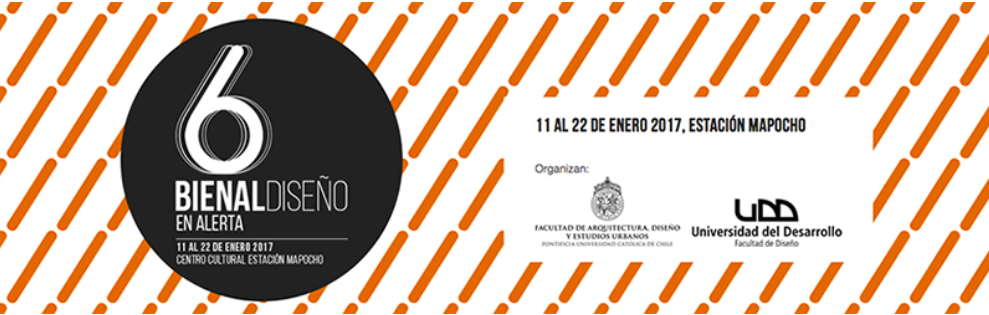
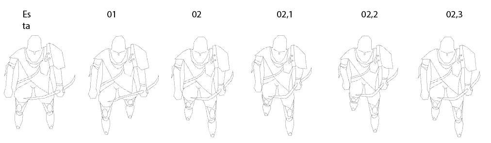

Ayudante 6 Bienal Diseño en Alerta (2016)
Para la Bienal de Diseño que se hizo en Chile hace unos años, se ayudo como taller a un grupo de titulantes en la conformación de distintos parámetros faltantes, en la construcción y propuestas que apoyaron al acto antes de su fecha límite. Entre estaban los contenedores donde 1000 a 1500 invitados podrían al unisonó acceder a estos módulos estructurales que mediante momentos establecidos se desplegaría bocados y bebestibles, todo comunicado desde un orden grafico y contenido en la estructura principal.
Proyecto de Ilustraciones (2017-2018)
Se realiza un cambio de logo para la empresa, donde se busca una simplicidad en su cara principal, pero permaneciendo dentro del contexto del servicio de la empresa, que es la distribución de herramientas y elementos de protección para los trabajadores contratistas. Posterior se realizan como anexo Tarjetas de invitación y presentación acordando los parámetros visuales y
Para la Bienal de Diseño que se hizo en Chile hace unos años, se ayudo como taller a un grupo de titulantes en la conformación de distintos parámetros faltantes, en la construcción y propuestas que apoyaron al acto antes de su fecha límite. Entre estaban los contenedores donde 1000 a 1500 invitados podrían al unisonó acceder a estos módulos estructurales que mediante momentos establecidos se desplegaría bocados y bebestibles, todo comunicado desde un orden grafico y contenido en la estructura principal.
Proyecto Sprite Juego RTS (2018)
Fases de prueba para concretar el inicio de la creación de un juego con parámetros medieval oscuro, donde en compañía de la programación se busca generar las primeras animaciones de movimiento en los personajes pensados..
